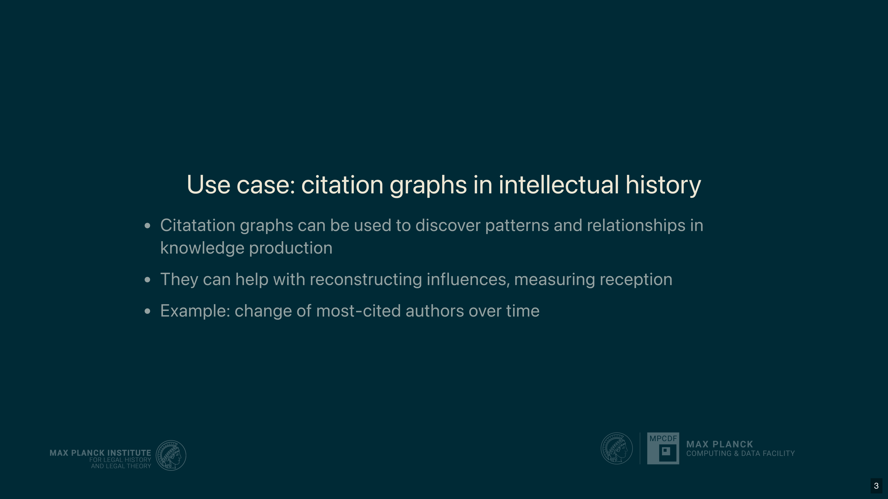
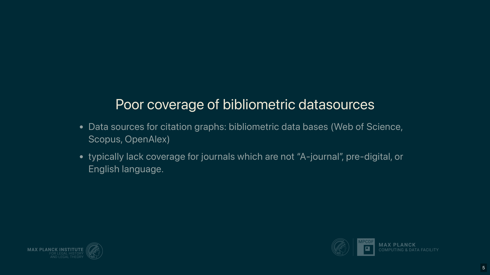
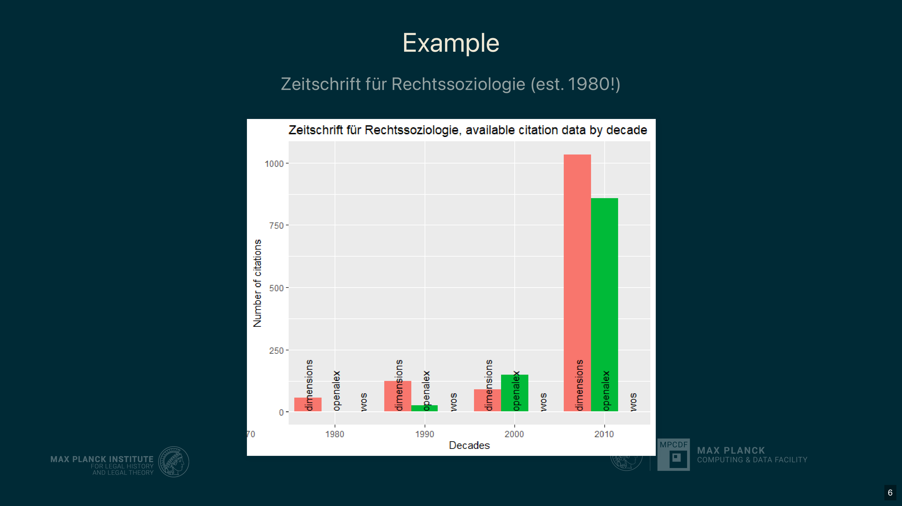
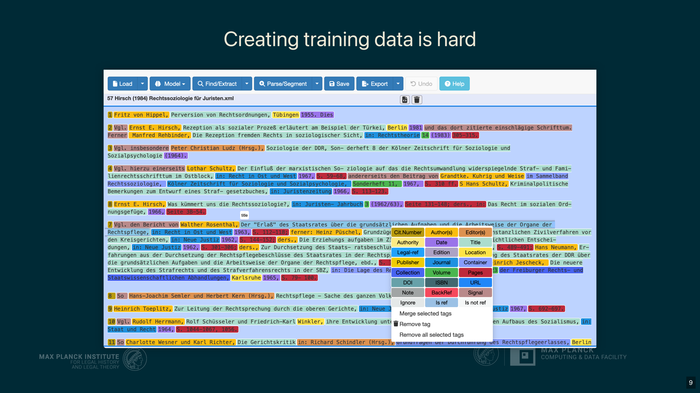
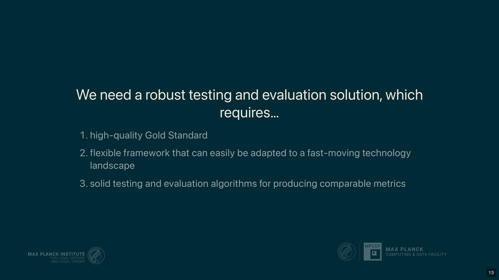
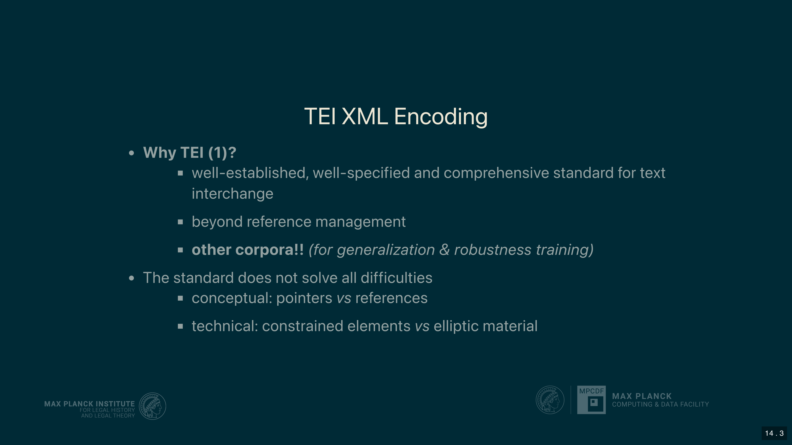
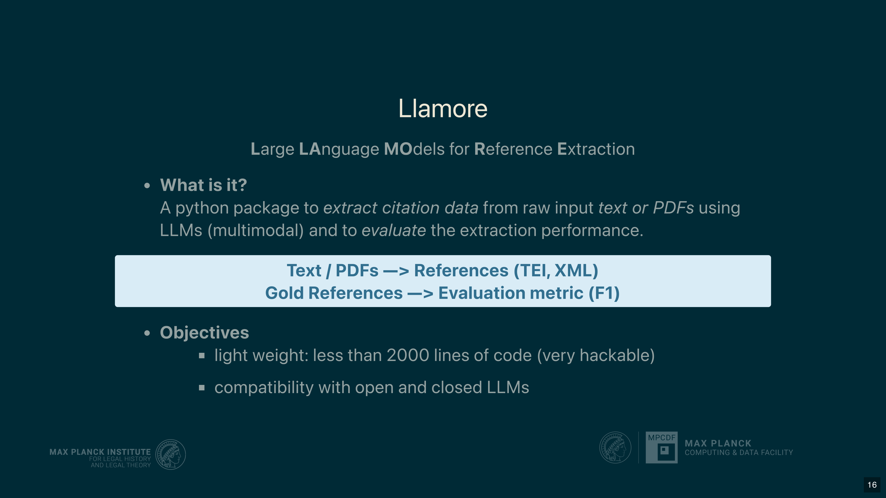
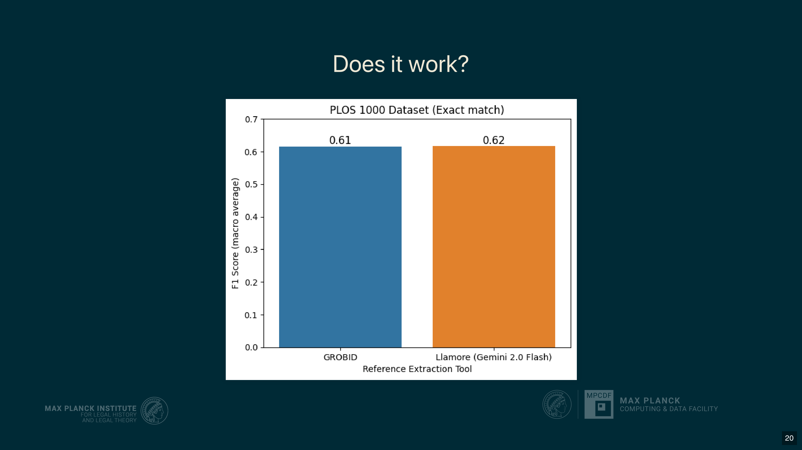

10 Extracting Citation Data from Law and Humanities Scholarship Using LLMs and a Specialized Gold Standard Dataset
Overview
This chapter addresses the profound challenge of extracting accurate citation data from scholarly publications in the humanities, a domain poorly served by existing commercial bibliometric databases. Presenters from the Max Planck Institute for Legal History and Legal Theory and the Max Planck Computing & Data Facility articulate a core research problem: the inadequacy of platforms like Web of Science and Scopus for intellectual history. These databases struggle with non-English, pre-digital, and footnote-heavy literature, rendering them unsuitable for the field.
To surmount these obstacles, the authors propose a new methodology centred on Large Language Models (LLMs) and a robust evaluation framework. Their team developed a high-quality, TEI-annotated Gold Standard dataset from open-access humanities journals, which serves as the foundation for testing a new Python package. This package, Llamore, is a lightweight interface for LLMs to perform reference extraction. The chapter details Llamore’s architecture, its evaluation methodology, and its comparative performance. On a standard biomedical dataset (PLOS 1000), Llamore’s performance is comparable to the established tool Grobid; however, on the custom humanities dataset, it significantly outperforms Grobid, demonstrating the value of LLM-based approaches for complex, domain-specific extraction tasks.
10.1 The Utility and Challenge of Citation Graphs

The authors’ central objective is to construct comprehensive citation graphs that illuminate trends in intellectual history. Such graphs are powerful analytical tools, enabling scholars to uncover latent patterns in knowledge production, trace the influence of specific authors and ideas, and quantitatively measure their reception within a scholarly community. An analysis of the most cited authors over a given period, for instance, provides a clear window into a field’s intellectual evolution.
A key challenge, however, lies in the initial data production. The team notes that a significant detour is required to generate the specialised data necessary to construct these graphs before their core research questions can ultimately be addressed.
10.2 Limitations of Existing Bibliometric Databases

A fundamental impediment to this line of enquiry is the profound inadequacy of established bibliometric databases. For the specific field of intellectual history, the authors find that major platforms such as Web of Science and Scopus are effectively unusable due to critical data deficiencies. Their coverage of essential academic journals is incomplete, they largely neglect scholarship from the pre-digital age, and they exhibit a strong bias towards English-language content.
Beyond these content-related failings, these commercial services are also prohibitively expensive and impose restrictive licensing terms. This fosters an undesirable dependency for the academic community, further hindering independent and comprehensive research.
10.3 Systemic Biases and Technical Hurdles

The authors’ analysis of the German journal Zeitschrift für Rechtssoziologie exemplifies this poor coverage, with major databases showing almost no citation data prior to the 2000s. This gap, they argue, stems from systemic biases. Commercial database providers focus on STEM, medicine, and economics—fields perceived as more profitable than the humanities. Consequently, their infrastructure is optimised for metrics like the impact factor, which holds little relevance for tracking intellectual history.
Furthermore, a significant technical hurdle arises from the very nature of humanities scholarship. Texts are frequently replete with dense, discursive footnotes that embed citations within extensive commentary and other textual noise. The authors describe these complex structures, which frustrate conventional extraction tools, as a ‘footnote from hell’.
10.4 From Failing Tools to Language Models

Traditional approaches to citation extraction have proven insufficient for these complex documents. The team found that creating the necessary training data involves a laborious manual annotation process, yet even with this investment, the performance of tools relying on established machine learning techniques like Conditional Random Forests is poor.
In contrast, the authors’ early experiments with Large Language Models (LLMs) yielded surprisingly effective results, with performance improving further in subsequent model generations. The advent of Visual Language Models (VLMs) now enables the direct processing of PDF documents, introducing a new frontier of methods that the research team is beginning to investigate.
10.5 The Imperative for a Robust Evaluation Framework

To harness the power of LLMs responsibly, the authors contend that a robust testing and evaluation regime is non-negotiable. Their work operates on a core principle: one must not attempt to solve problems without first securing the data needed for validation.
This philosophy necessitates the development of a high-quality Gold Standard dataset to serve as a benchmark for accuracy. Moreover, the evaluation framework itself must be flexible enough to accommodate the fast-moving technological landscape, whilst the testing tools must generate comparable metrics. This ensures rigorous and transparent performance comparisons against other existing or future solutions.
10.6 Developing a TEI-Annotated Gold Standard

The authors selected the Text Encoding Initiative (TEI) XML format to build their Gold Standard dataset, a decision grounded in its status as the pre-eminent standard in the digital humanities. Unlike purely bibliographic formats such as CSL or BibTeX, TEI offers a far more comprehensive and well-specified framework. Its richness allows for the encoding of crucial contextual phenomena, such as the author’s intention behind a citation, which goes beyond simple reference management.
This choice also enables the team to tap into a wealth of existing digital editions and text corpora already encoded in TEI. Crucially, using this interoperable standard ensures compatibility with key information extraction tools like Grobid. This alignment allows for direct performance comparisons, the use of Grobid’s training data, and the contribution of their new dataset back to the Grobid project.
10.7 Constructing the Humanities Citation Dataset

The team is actively constructing a new dataset comprising over 1,000 footnotes sourced from 20 different articles, which are expected to yield more than 1,500 reference instances. Midway through the project, their strategy shifted towards using Open Access journals; this change ensures that the entire pipeline—from the original PDFs to the final parsed data—can be made publicly available.
The selected articles provide linguistic and temporal diversity, spanning multiple languages and a broad historical period. The encoding workflow proceeds in stages: first, the reference string is segmented and isolated from non-bibliographic text within the footnote, and second, this string is parsed into a structured format. Notably, the authors encode every single reference as a unique occurrence, thereby preserving the context of each citation.
10.8 Llamore: A Lightweight Python Package

To implement their LLM-based approach, the authors developed Llamore, a Python package for Large Language Models for Reference Extraction. This tool performs two primary functions: it extracts references from supplied text or PDF files, and it evaluates the performance of this extraction against a gold standard.
Two key objectives guided its design. First, it is lightweight, containing no models itself but rather serving as a flexible interface to a user-selected model. Second, it ensures broad compatibility with both open and closed-source LLMs and VLMs. Available via pip, Llamore’s workflow involves defining an extractor, which can connect to any OpenAI-compatible API, thereby supporting a wide range of model-serving frameworks like Olama. The extracted references can then be exported as TEI XML, and their accuracy assessed using the package’s built-in F1 evaluation class.
10.9 Evaluation Methodology and Comparative Results

The authors employ a rigorous evaluation methodology centred on the F1 score, a well-established metric for structured data comparison. This score is calculated from precision and recall, which are determined by counting the number of exact matches for each field within a reference. To solve the complex problem of aligning the list of extracted references with the gold standard list, the team frames it as an unbalanced assignment problem. They use a solver from the SciPy library to find the optimal one-to-one mapping that maximises the overall F1 score, penalising both missing and hallucinated references with a score of zero.
Comparative tests reveal a telling divergence in performance. On the PLOS 1000 biomedical dataset, Llamore performs on par with the highly optimised Grobid tool, albeit at a much higher computational expense. On the custom humanities dataset, however, Grobid’s performance falters, whereas Llamore demonstrates significantly superior extraction accuracy.